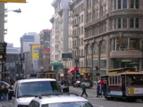

ベイブリッジを通り、580号から5号を通ってひたすら帰り道を行きます。
同僚から「5号は退屈」と聞いていましたが、まさかここまでとは！広くて何もない土地をひたすらまーーーーーっすぐに走り続けます。風景がちっとも移り変わりません。 まぁ風景自体は、車のCMなんかでよく見るナイスな平原と言えなくもないのですが、CMは30秒程度で終わりますが、この場合は4時間以上続きます。
さらに、退屈な土地はFM放送すら退屈なので本当に困ります。
早く抜け出したい一心で、ひたすら走り続けて6時間。無事L.A.にたどり着きました。 考えて見れば４連休中、1日たりとものんびりしなかったので、帰宅したはいいものの洗濯等をする元気がちっとも湧いて来ません。来週からどうすれば。
ホテルのシャトルバスが信用ならないことが分かったので、今日は車でサンフランシスコの北西部を走ることにします。 ある目的を達するためにも車での移動は好都合なのです。
というわけでケーブルカーと並走しながら、さっそくカーステレオに「筋少の大車輪」とラベルされたCDをセットし、11曲目を再生します。
……サンフランシスコ！！（脳内で大槻ケンヂと合唱開始）
というわけでサンフランシスコでサンフランシスコを聴くという目的は達せられました。(*)
その後、ゴールデン・ゲート・パークの日本庭園を訪ねたり(意外と普通の日本建築でガッカリ)、ゴールデン・ゲート・ブリッジを渡って海の向こうからサンフランシスコのビル群を眺めたりしました。思わず「ここからだと、あの街が蜃気楼のように見える。 そう思わないか？」という台詞を呟いてしまいそうになるほどの絶景です。
")
その後、市街地まで戻ったのですが、信号待ち渋滞の横をセグウェイが颯爽と走り去って行くのを目撃し、かなり感動しました。それからサンフランシスコのゲーセンはSFMOMA(近代美術館)の向かいにあるショッピングビルMETREONの2Fにあることを知っていたので(*)、パーキングに車を放り込んで突入して来ました。
豆知識）対戦台は日本みたいに背中あわせではなく、横並び。
カップルVS男性一人という構成で対戦しているのを見かけたので後者を心の中で応援しておきました。
対戦台があるのだからシューティングだって！と思って店内を確認したところ、稼動していたのは「グレート魔法大作戦(DAI MAHOO!)」でした。…よりによって！
酸辣湯にのびた麺が入ってる謎のラーメンを食べてホテルに戻ると「節電に協力を！」という置手紙がベッドの上に置かれていました。照明もTVも暖房も全て消して出かけたのに、これ以上何をどうしろというのか。
*) 本日の日記は「身代わりプログラム」の11/6、11/16分と合わせてお楽しみください。
ホテルから出ているシャトルバスでUnion Squareまで。ホテル周りの危ないところは歩けないからね！
そこからケーブルカーに乗り、北東のエリア(終点)まで移動します。サンフランシスコは意外と狭いので、フッシャーマンズワーフから中華街/ブロードウェイあたりは普通に歩いてまわれます。北東部の観光エリアは一通り歩いて回りました。フィッシャーマンズワーフでは狭いスペースにひしめく大量のタマちゃんもいました。密集しすぎです。

サンフランシスコは全米で最もリベラルな街だと聞いていましたが、「Hemp is Hope」というポスターが貼ってあるのを見かけた時は、いくらなんでもおおっぴらすぎるだろうと思いました。
晩ご飯を食べた後、朝シャトルバスを降りた場所に移動して、ホテル行きのシャトルバスを待ちます。しかし、40分以上待っても一向に現れる気配がありません(バスは30分おきにでるはずなのに)。
ホテルに確認の電話をかけたところ、こっちが話している途中で電話を切られました。どういうこと！再度かけ直して文句を言ったら「誰も彼もが文句の電話をかけてくるんだよ！」と不機嫌そうに返されました。あたりまえです。
詳しく聞くと、どうもなんか道が混んでるからやめたようです。そんなのでやめられても困るんですよ！結局、2ブロック先の空いてるエリアに10分でバスをよこすからそこまで歩いてくれ、と言われて、他のバスを待っていた人とぞろぞろ移動しました。みんな無口です。
やっとでホテルに帰ったら、エレベータが壊れてました。 このホテルはどうかしてます。
フリーウェイ101号をひたすら北上。サンフランシスコに到着したのは夜7時くらいでした。
フリーウェイを降りた後、一方通行の制限のせいで大回りしているうちに道に迷い、半泣きになりました。地図を頼りになんとかホテルのある通りへ戻って来たのですが、ホテルは一方通行の道の後方に位置していたため、もう迷ってなるものか！と無理矢理バックで戻りました。
チェックインしようとしたら「予約がない」と言われて一悶着(予約データにスペルミスがあった。ネットで予約なのになぜ)。やっとで部屋まで行くと、3ッ星ホテルのはずなのにあまりにモーテル風でガックリしました。
とりあえず晩飯にありつこうとホテルの外をうろついたのですが、ホテルの周りは明かりがほとんど灯っておらず、ホームレスの人たちがたくさんいて、電柱をガンガン殴りつけたりしているため、すぐ怖くなってホテルに舞い戻りました。一応、ホテルにはレストランがあるからです。部屋からレストランに行く途中、水着を着たカップルと遭遇しました。ホテルには一応プールもあるのです。3ッ星はレストランとプールで勝ち取ったとしか思えません。
ホテルのレストランでThanks GivingメニューのTraditional Turkey Dinnerを注文したところ、ターキーの下に山ほどおからが盛ってありました。おから…。
ターキー(とおから)を食べて部屋に戻る時、さっきの水着カップルとまた遭遇しました。今度は、男がぐったりとした女性を抱きかかえていました。女性の唇は真っ青で、離れていても匂ってくるほどアルコール臭かったです。ほんの30分で一体なにが。
部屋の風呂は、湯船のないシャワー室タイプ。とりあえず汗を洗い流し、明日からどうなるんだろうと思いながらガクガクブルブルと就寝しました。(つづく)
明日からThanks Givingで４連休になるので、サンフランシスコへ行ってみることにしました。
旅行予約サイトで３ッ星がついているホテル(最高は４ッ星)を予約し、とっとと眠りにつきました。